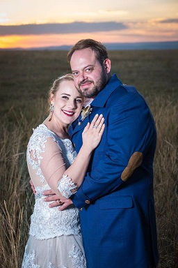

Although it is our special day, we would like to give a special shout-out to those people who will help us make the day extra specia, in the hope that they will get the deserved exposure for the quality services they provided on our special day
Lara and Jaco BothaOne couple, 2 different jobs Lara and Jaco are our makeup artist and photographer respectively. Having seen several photographers and a handful of makeup ladies at various expos, we were really spoilt for choice already before meeting Lara and Jaco. But what immediately set our mind on them was the following: - The subtlety of Lara's makeup designs - Jaco's stance on a "2nd shooter" - Their experince in the field and the fact they just seemed to "get us" - Their overall aura It is for this reason why we picked them, and we are eagerly looking forward for them to assist us on our big day. For more information about each, visit: Lara - Lara's Beauty Spot Jaco - JwB Photo |
 |
Merci FlowersThank you for the flowers, Merci!" Taniel at Merci Flowers has always treated us with kindness and decency, and has high-quality flowers to show for it. We've had the pleasure of previewing their work for birthday flower arrangements, and are very impressed. What's also impressed us is their willingness to send photos straight away, in addition to all quotes. Another huge plus is they're 'local' to us, as they're down the road from Kari's work, therefore can handle the flowers in Bryanston with ease |
|
SelfiePro"But first, lemme take a selfie!!" Deon and Frik at SelfiePro have a niche product, and one which we hope you'll use thoroughly. Yes, that's right... YOU. So how this works is you get a memorable selfie as a gift, and all we ask in return is you then save that selfie and a message onto our digital guestbook for our memories! Sounds simple enough, right!! We cannot thank the gentlemen at SelfiePro enough, and hope everything comes together on the day as we plan it to do so. You can start your own journey with SelfiePro here: The SelfiePro website |
|